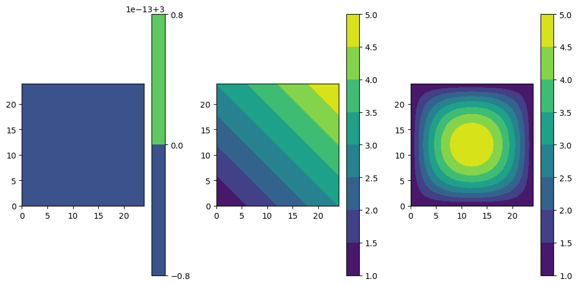
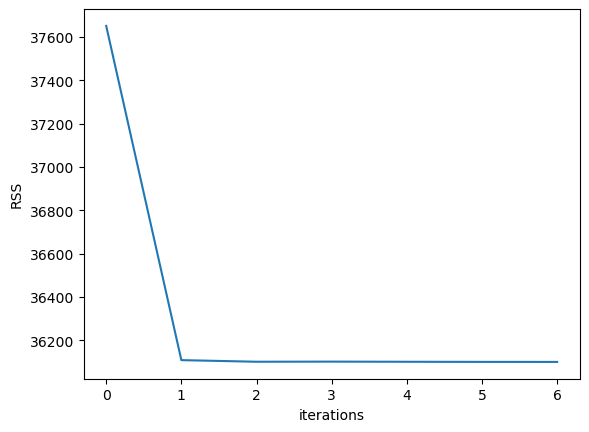
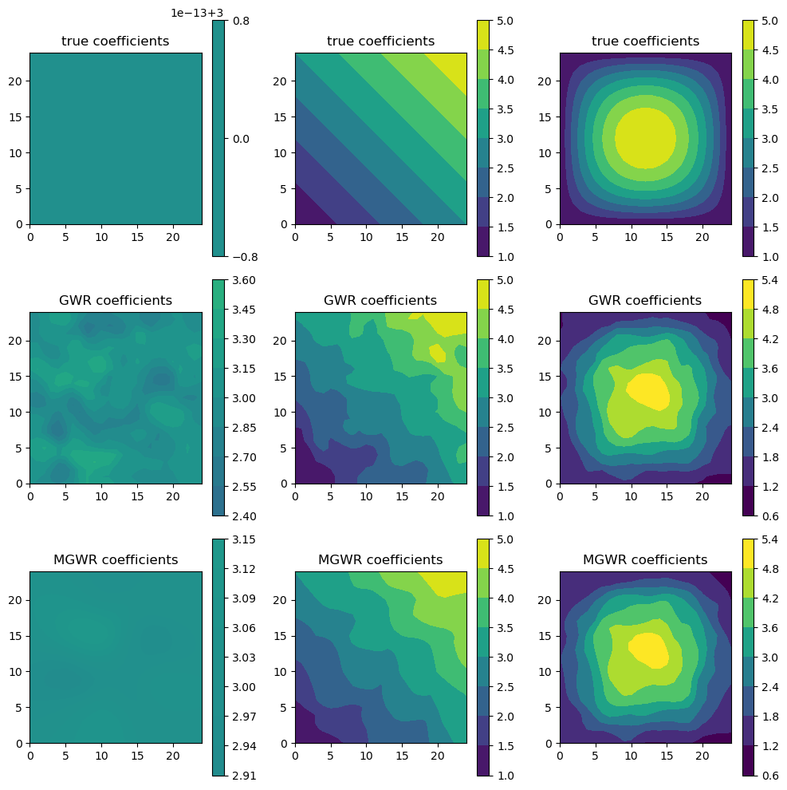
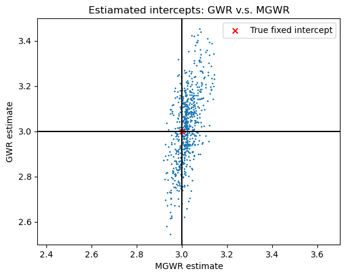

Adaptive Bandwidth
[1]:
import numpy as np
from jax import numpy as jnp
from jax import random
import matplotlib.pyplot as plt
import sgGWR
An NVIDIA GPU may be present on this machine, but a CUDA-enabled jaxlib is not installed. Falling back to cpu.
[3]:
# spatial coefficient from
# Fotheringham, A. S., Yang, W., & Kang, W. (2017). Multiscale Geographically Weighted Regression (MGWR).
# Annals of the American Association of Geographers, 107(6), 1247–1265. https://doi.org/10.1080/24694452.2017.1352480
u0, v0 = jnp.arange(25), jnp.arange(25)
u, v = jnp.meshgrid(u0, v0)
u, v = u.flatten(), v.flatten()
N = len(u)
rngkey = random.PRNGKey(123)
beta = jnp.stack(
[
3 * jnp.ones(N),
1 + (u + v) / 12,
1 + (36 - jnp.square(6 - u / 2)) * (36 - jnp.square(6 - v / 2)) / 324,
]
).T
X = jnp.concatenate([jnp.ones((N, 1)), random.normal(rngkey, shape=(N, 2))], axis=1)
y = jnp.sum(X * beta, axis=1) + 0.5 * random.normal(rngkey, shape=(N,))
# %%
fig, axes = plt.subplots(1, 3, subplot_kw={"aspect": "equal"}, figsize=(10, 5))
for d in range(3):
ct = axes[d].contourf(u0, v0, beta[:, d].reshape(len(u0), len(v0)))
fig.colorbar(ct, ax=axes[d])
fig.tight_layout()
plt.show()

[5]:
sites = jnp.stack([u, v]).T
kernel = sgGWR.kernels.AdaptiveKernel(params=[10])
model_gwr = sgGWR.models.GWR(y, X, sites, kernel=kernel)
optim = sgGWR.optimizers.golden_section()
optim.run(model_gwr)
model_gwr.set_betas_inner()
[9]:
sites = jnp.stack([u, v]).T
kernel = sgGWR.kernels.AdaptiveKernel(params=[10])
model_mgwr = sgGWR.models.MGWR(y, X, sites, kernel=kernel, base_class=sgGWR.models.GWR)
optims = [sgGWR.optimizers.golden_section()] * 3
model_mgwr.backfitting(optimizers=optims, run_params={"verbose": False})
plt.plot(model_mgwr.RSS)
plt.xlabel("iterations")
plt.ylabel("RSS")
plt.show()

[10]:
print("GWR bandwidth = ", model_gwr.kernel.params[0])
print("MGWR bandwidth = ", [int(k.params[0]) for k in model_mgwr.kernel])
GWR bandwidth = 29
MGWR bandwidth = [161, 35, 26]
[11]:
fig, axes = plt.subplots(3, 3, subplot_kw={"aspect": "equal"}, figsize=(10, 10))
for d in range(3):
axes[0][d].set_title("true coefficients")
ct = axes[0][d].contourf(
u0, v0, beta[:, d].reshape(len(u0), len(v0)), vmin=1.0, vmax=5.0
)
fig.colorbar(ct, ax=axes[0][d])
axes[1][d].set_title("GWR coefficients")
ct = axes[1][d].contourf(
u0, v0, model_gwr.betas[:, d].reshape(len(u0), len(v0)), vmin=1.0, vmax=5.0
)
fig.colorbar(ct, ax=axes[1][d])
axes[2][d].set_title("MGWR coefficients")
ct = axes[2][d].contourf(
u0, v0, model_mgwr.betas[:, d].reshape(len(u0), len(v0)), vmin=1.0, vmax=5.0
)
fig.colorbar(ct, ax=axes[2][d])
fig.tight_layout()
plt.show()

[12]:
plt.axis("equal")
plt.scatter(model_mgwr.betas[:, 0], model_gwr.betas[:, 0], s=1, marker="x")
plt.axvline(3, color="k")
plt.axhline(3, color="k")
plt.scatter(3, 3, marker="x", c="red", label="True fixed intercept")
plt.legend()
plt.title("Estiamated intercepts: GWR v.s. MGWR")
plt.xlabel("MGWR estimate")
plt.ylabel("GWR estimate")
plt.show()

[ ]: